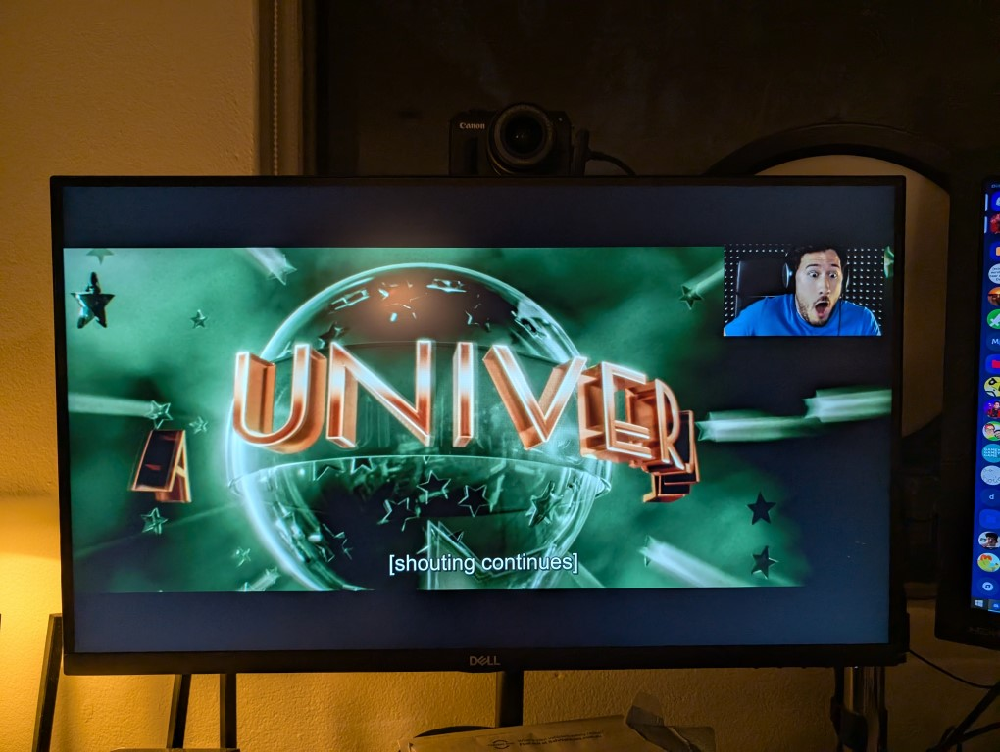
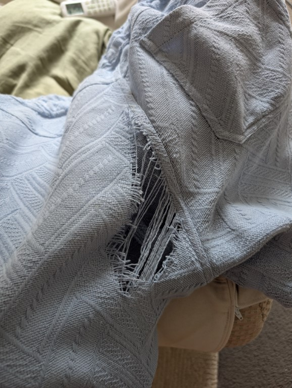

January, the month derived from the latin Jānuārius. Idk this is a month. Fuck thats depressing, i promise that its not all bad but there is a bit at the end that i wrote while i was at my grandfathers funeral and i am not going to read it again and i don't blame you for not reading it either anyway photos (edit from pubslihing, this is so many photos wtf how have i done so much this month, also the riverdale version of next to normal just came up on shuffle and i almost threw my ipod across the room)
Had these bags of empties to earn and return (thanks sarah for sorting this during the night)
While hungover went to where my mum was dog sitting and ruby was delightful
Went for birthday drinks on the sat before my birthday and this spam drink was so fucking good despite what it was served in
Then went to support my mum when the news came and the cat (who the owner assured my mum is not a clingy cat) was so clingy while i was there, it was ever so lovely to have
Applied for a Macqaurie bank account and the cunts wouldnt accept my license as ID so i had to get it certified by an JP which i did at stanmore library and on the way there had a bit of mulch go under my toe nail (im not sending a pic of that but it hurt)
Went to reverse garbage as a birthday treat and just look at all this, its so good - i bought one of the phones as i do not have the room for a piano
Final birthday treat was watching the first Lord of the Rings movie with sabrina in preparation for
Lord of the Rings the Musical! I have written 4 pages worth of notes for it and it has inspired me to start keeping a notebook of thoughts about the shows i see
In another “why does jack keep hurting himself” i fully stabbed under my nail on this knife as i went to pull out the dishwasher try, moral of the story is - put knifes at the back
Had a delayed birthday dinner with family at an ramen place thats also a bike workshop, it was an awesome vibe
Went up to my grandparents place as i was prepping the memorial video and my mum was annoyed i didnt have some pics (because they were in a spot i was told there were no photos) but look at this guys vibe its immaculate
I also took these two vhs’s because i asked “would anyone miss them” and my mum just glared at me going “you can take the vhs player as well” and i guess one day im gonna have a vhs player
Sorted through photos for the slideshow, i had them all printed as my mum is a lot with computers and this was the only way i could like, draw through things with a red pen and go “NO”
Ive started painting little water colours and this one im actually proud of? I was gonna do these as little gifts but i think this ones for me
Got my suit drycleaned and fucking loved the vibe of the ticket they gave me
I bought 2 packets of puff pastry for NYE thinking that i would need it to make some pigs in blankets but i used one (1) sheet so ive been making these scrolls with brown sugar as an treat and i don't know how to make the sugar not just end up on the tray but theyre fun
Went through the auto car wash and theres no better way to spend a day other than going op shopping and seeing
This! I am flummoxed why i didnt buy it, seeing now that its only $4 god im a fool
I emptied out my eski after NYE and this was left in there and it has stayed at the edge of my bathtub for most of January
Ok slight funeral stuff, had to take this pic of my Aunt and Uncle watching the vid i made, my uncle had already seen it and insisted that my aunt should watch it so to not be so surprised (spoiler alert, it killed at the funeral)
My uncle had a big job of splitting up the alcohol but i was like “can i have the giant bottle of vodka” and he looked so confused until i pulled it out and went “i got that bottle almost 30 years ago when i worked at a bar in north sydney” and now its mine. It has no information other than the label you see
Wearing suits rule
My mum was dog sitting two other dogs after ruby and the cat, these dogs are a fucking handful - one has anxiety and will just start licking you and will not stop. While i was there a thunderstorm rolled through so my mum rushed to drug the one with anxiety but the other one took it so they were both high as fuck just wanting human contact while they were sprayed out on the floor
Finally got the lockpic to try and unlock the window that was locked at NYE and for some reason it wont fucking turn? I can do the one in my laundry thats the same lock with 0 effort which makes me think that the lock is fucked? This has reminded me i need to go and get wd40

Watched wicked with Mae and the 1 hour of silence occasionally broken up by markeplier saying is that the bite of 87?
Sat on the stage at ghost quartet and fuck the anxiety of the audience filling up while im the only one sitting on the two rows on stage was terrifying (thankfully like 5 more people came)

I have worn these pants twice, and yesterday was day 3 - getting out of my car to get lunch and i fully ripped them. Sighs powerful ass i guess
I don't really have much else to say, usually id put other talking points here (i have 3 in my template) but i think im just gonna sign off here, below is a bunch of stuff about the funeral and feelings and such but none of you are under any obligation to read it, i just wanted to note it down and for some reason am vocalising it here. Anyway
Ok so im currently making the slideshow for my grandfathers funeral, and im still yet to cry making it but i reckon ill do that on the day but also im now like “oh i am gonna do black nails for the funeral” which i feel is good goth shit but im also like, fuck my aunt is incredibly homophobic (by the account of her own kids) but also - my mum has been on the verge of being done with her for about 2 years now so like, who gives a shit if she calls me a slur (i don't think she would but i could see her doing it behind my back) i have dealt with my grief (she never did and just shifted the blame on her siblings)
Also I had to rush out last night (I'm writing this the day before the funeral) and get a black tie so went into my local tarocash at Marrickville metro, and the guy was so scared when he saw me and then said “ah so what's this for” and when I said funeral he shifted so visibly it is so fuckin funny, he was clearly so uncomfortable with it and then asked “oh so you don't have to but would you donate anything to make a wish. Were falling behind on our targets” which made me think why the fuck does a store have donation targets?
Ok it's now the Friday, and the church was much more tolerable this time, last time it was so fuckin preachy but we all liked this. But I went into the wake and then had to run home to get a cable to plug my iPad into the tv and came back to find everyone already settled and my mum's friend that I can't stand came (she didn't know she was coming until this morning) so I sorta just sat there sad for 5 mins and then decided to just walk away. I went into my grandparents old shop, which I haven't been in since they retired and fuck it's so different- the old bit that used to be storage out back is now a cafe and they've got a butchers thing. Really just wierd. Right now I'm sitting alone in the breaseway just trying to not anything. Don't know what that means but I've said it and I feel it represents what I'm at.
The family ended up coming back to the house and this was much better, I just truly could not deal with all the extended friends and old people. But we've just done a shot of an whisky liquore as a toast and it was so fuckin nice, turns out it's been discontinued and everyone's saving their bottles for their own funerals and the fact we drunk the last of my grandfather's one had a real moment of “oh shit he gone” which I don't think had hit me before

We did a shot of this, and i thought it was a shot and took my uncles “savour it” as a joke. Until he explained that it was a whisky you can no longer get, my grandfather bought an case of them from the last pallet ever sent to Aus and there was enough left for us to all have a shot of it and when we cheeresed i had a real fucking like “oh this is it” moment, and im annoyed at myself for downing it in one but HE DIDNT TELL ME IT WAS SPECIAL! Also i was driving home so it was just a nip, but it was such a nice nip and hearing everyone else go “yeah the bottle i have will be opened at my funeral” has me real sad and i had to walk away to not burst out in tears anyway.
le end